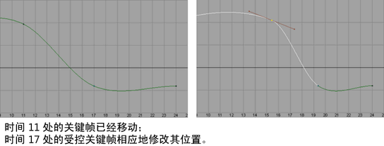

设置受控关键点关键帧
- 在“曲线图编辑器”(Graph Editor)的“关键帧”(Keys)菜单中，选择“插入关键帧”(Insert Key) >
 以打开插入关键帧选项(Insert key options)窗口。
以打开插入关键帧选项(Insert key options)窗口。
受控关键点是一种与相邻关键帧保持成比例时间关系的特殊关键帧。
使用受控关键点可调整动画的计时，并保留点在动画曲线中的属性值。受控关键点在“时间滑块”(Time Slider)中为绿色记号，并且在“曲线图编辑器”(Graph Editor)中为绿色点。
注： 您可以在颜色设置(Color Settings)中自定义受控关键点颜色。


在第一个示例中，插入一个普通关键帧，并移动相邻关键帧。在第二个示例中，插入一个受控关键点关键帧，并移动相邻关键帧，这次，插入的关键帧会调整以适应曲线形状的变化。请注意，受控关键点关键帧为纯绿色。
在以下示例中，如果向前移动第 11 帧处的关键帧以加快操作速度，则时间 17 处的受控关键点也会向前移动，以保持平滑过渡到时间 24 处的关键帧（此关键帧未移动）。

没有任何相邻关键帧的受控关键点未绑定。当您放置、编辑和移动时，这些受控关键点的表现方式类似于常规关键帧。受控关键点包含可编辑的切线。如果一个或多个受控关键点已由常规关键帧绑定，则受控关键点修改其位置的输入时间，以反映对常规的绑定关键帧的时间位置所做的任何更改。有关详细信息，请参见设置受控关键点。